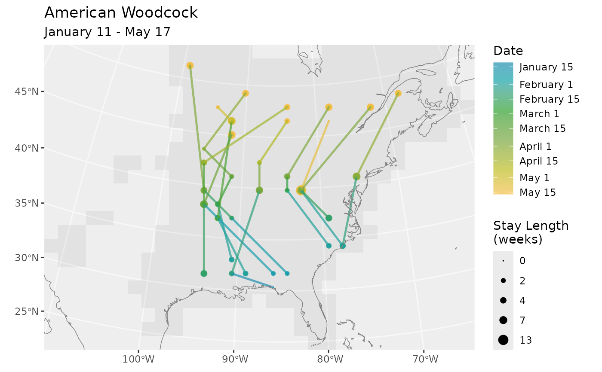
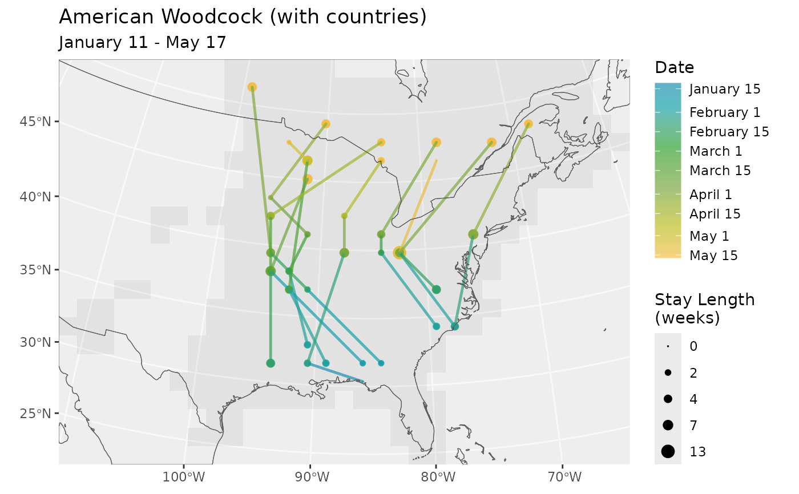
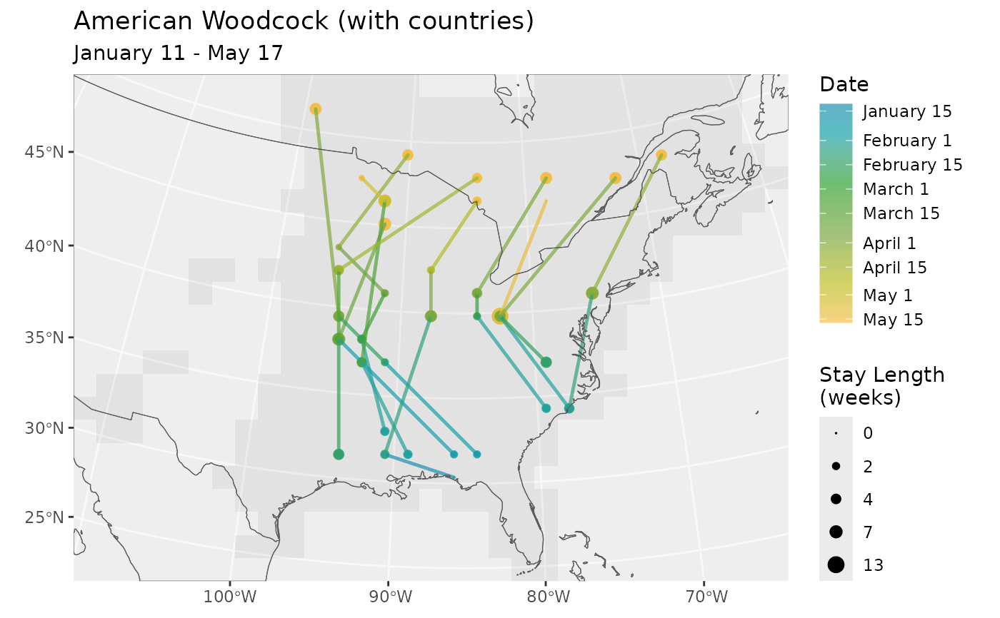

Plot Routes and BirdFlowRoutes objects as as lines with color indicating
the passage of time. For BirdFlowRoutes the end point of each week
is shown as a dot and the size of the dot corresponds to how long the birds
stayed at that location.
Usage
plot_routes(
routes,
bf,
facet = FALSE,
max_stay_len = NULL,
use_seasonal_colors = TRUE,
pal = NULL,
barheight = 8,
route_linewidth = 0.85,
dot_sizes = c(1.1, 3.5),
coast_linewidth = 0.25,
stay_units = "weeks",
show_mask = TRUE,
crs = NULL,
static = TRUE
)
# S3 method for class 'BirdFlowRoutes'
plot(x, ...)Arguments
- routes, x
An object of class
RoutesorBirdFlowRoutes. Likely the the output ofroute(), as_BirdFlowRoutes, orRoutes().- bf
A BirdFlow object. Only used if
xis aRoutesobject, in which case it provides the CRS and- facet
If
TRUEthen useggplot2::facet_wrap()to show each route out into a separate subplot.- max_stay_len
Used to scale the stay length dots. If
NULL(the default) it will be set to the maximum"stay_len"value inroutes. Set it manually to keep the dot scaling consistent across multiple plots.- use_seasonal_colors
If
TRUEa color scale that uses blues, greens, yellows, reds, for winter, spring, summer, and fall will be used with a consistent mapping of dates to colors regardless of the range of dates plotted. IfFALSEthen the data will be plotted using the full color scale.- pal
The color palette to use for plotting when
use_seasonal_colsisFALSE. Defaults to viridisLite::viridis(n = 5).- barheight
The height of the color gradient legend bar. Passed to
ggplot2::guide_colorbar()asbarheightargument. Depending on the output resolution and plot size this may need to be adjusted. Can take a number or the output fromggplot2::unit().- route_linewidth
Line width used for routes.
- dot_sizes
Two numbers indicating the smallest and largest dot sizes used to represent stay length.
- coast_linewidth
Line width used for coastlines.
- stay_units
The unit to plot the stay length at each location. Default to
weeks. Other options includesec,mins,hours,daysandweeks.- show_mask
Should the BirdFlow Model's (
bf) static mask be displayed.- crs
Only used when
bfis missing.crssets the Coordinate Reference system used for plotting. Seeterra::crs().- static
For internal use. It is set to
FALSEwhenplot_routes()is called fromanimate_routes().- ...
Passed to
plot_routes()fromplot()forRouteandBirdFlowRoutesobjects.
Value
A ggplot object. Use print() to display it.
Examples
bf <- BirdFlowModels::amewoo
n <- 10
rts <- route(bf, n, season = "prebreeding")
# Multiple routes on one plot
plot_routes(rts, bf)

# One panel per route
new_rts <- rts
new_rts$data <- new_rts$data[new_rts$data$route_id %in% 1:4, ]
plot_routes(new_rts, bf, facet = TRUE)
 # Returned plot object can be edited
# Here we change the title and add an additional sf
# layer with country boundaries
library(ggplot2)
p <- plot_routes(rts, bf) +
ggtitle(paste0(species(bf), " (with countries)")) +
geom_sf(data = get_countries(bf), inherit.aes = FALSE, fill = NA) +
coord_sf(expand = FALSE)
#> Coordinate system already present.
#> ℹ Adding new coordinate system, which will replace the existing one.
p

if (FALSE) { # \dontrun{
# Use alternate color palettes
plot_routes(rts, bf, use_seasonal_colors = FALSE)
plot_routes(rts, bf,
use_seasonal_colors = FALSE,
pal = c("red", "yellow", "blue")
)
} # }
# Returned plot object can be edited
# Here we change the title and add an additional sf
# layer with country boundaries
library(ggplot2)
p <- plot_routes(rts, bf) +
ggtitle(paste0(species(bf), " (with countries)")) +
geom_sf(data = get_countries(bf), inherit.aes = FALSE, fill = NA) +
coord_sf(expand = FALSE)
#> Coordinate system already present.
#> ℹ Adding new coordinate system, which will replace the existing one.
p

if (FALSE) { # \dontrun{
# Use alternate color palettes
plot_routes(rts, bf, use_seasonal_colors = FALSE)
plot_routes(rts, bf,
use_seasonal_colors = FALSE,
pal = c("red", "yellow", "blue")
)
} # }